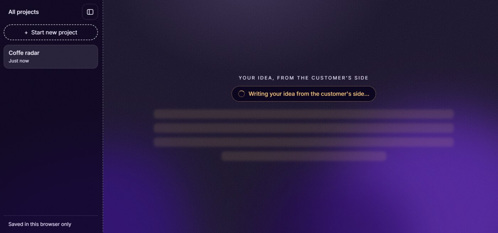

Plan
Start with one sentence
The first screen asks a single question: what are you building? Before any research, the app rewrites the idea from the customer's side, so the founder starts from the problem people have, not the feature they want to build.


There is no account. Projects are saved in the browser only, and "Restore from a backup" brings them back. People can try it without handing over an email.